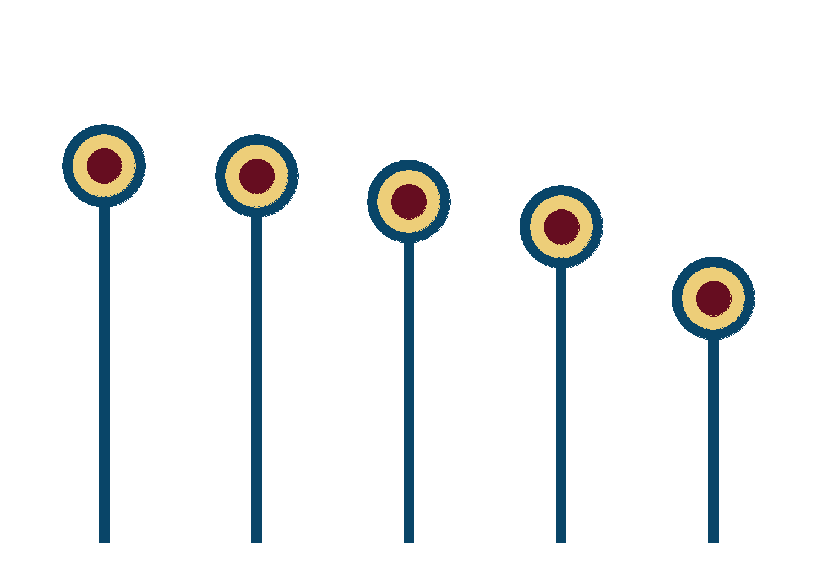

library(tidyverse) # untuk manupulasi, merapikan, & visualisasi data
library(gapminder) # untuk mengakses gapminder datasetlollipop_df <- gapminder %>%
group_by(continent) %>%
summarize(medianlifeExp = round(median(lifeExp),0))lollipop <-lollipop_df %>%
ggplot(aes(x = reorder(continent, -medianlifeExp),
y = medianlifeExp)) +
geom_col(alpha = 1,
width = .06,
color = '#094568',
fill = '#094568',
show.legend = FALSE) +
geom_point(alpha = 1,
size = 24,
color = '#094568',
show.legend = FALSE) +
geom_point(alpha = 1,
size = 18,
color = '#edce79',
show.legend = FALSE) +
geom_point(alpha = 1,
size = 10,
color = '#660d20',
show.legend = FALSE) +
scale_y_continuous(limits = c(0, 100)) +
theme_minimal() +
theme(
axis.title = element_blank(),
axis.text = element_blank(),
axis.line = element_blank(),
panel.grid.major = element_blank(),
panel.grid.minor = element_blank(),
panel.background = element_rect(fill = '#FFFFFF',
color = NA),
plot.background = element_rect(fill = '#FFFFFF',
color = '#FFFFFF')
)